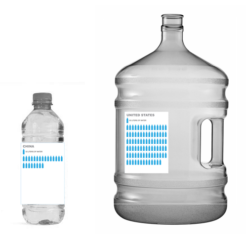
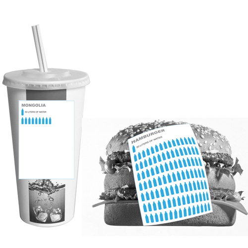
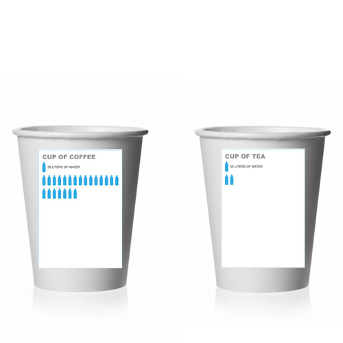

What is Your Water Footprint?
What does water mean to you? How you use it, and even think about it, depends a lot on where you're from. If you're lucky you probably don't think about where your water comes from, where it goes, or worry about having enough. But for many, clean water is a luxury and can be a matter of life and death.
*notes
The bars for "Water Supply" have been scaled logarithmically so countries with lower values appear at all
sources
- "2004 Global Clean Water Supply as % of Population," Pacific Institute, accessed March 13, 2011
- "Access to Safe Drinking Water, by Country, 1970 to 2004," Pacific Institute, accessed March 13, 2011
- "Everything About Water," Pacific Institute, accessed March 13, 2011
- Water Content of Things Pacific Institute, accessed March 13, 2011
- countries.js


